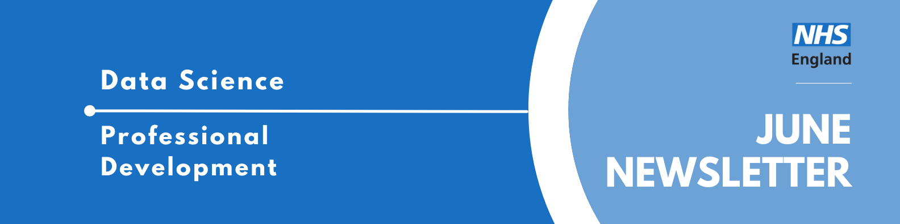

Data Science Community for Health and Care Newsletter June 2025

Welcome to the latest newsletter from the Data Science Community for Health and Care, brought to you by the NHS England Data Science Professional Development Functional Team.
The newsletter team are always happy to receive constructive feedback, and we invite you to send us any contributions you may have.
If you cannot access something of interest to you, please reach out.
Thanks for reading! – newsletter team
Interview with a Data Scientist - The Data Scientist Who Just Wanted to Make Plots
Welcome to another insightful installment of our “Interview with a Data Scientist” series. Here, we delve into the diverse career paths and impactful work of the talented individuals who make up the NHS England Data Science team. Our goal is to shine a light on the fantastic people driving the NHS Data Science Profession forward and to offer valuable perspectives for anyone considering a career in healthcare data science.
This week our interviewee is Amaia Imaz Blanco, a Data Scientist in the Data Science Team whose love of making graphs led her to the NHS Digital Graduate Scheme and eventually into probabilistic data linkage!Read more…
How did you end up in data science at the NHS? What did you do before, and what really sparked your interest in this field?
I wouldn’t say I had a grand plan to get into data science — but looking back, it probably isn’t a huge surprise. When I was asked what I wanted to be at age 11, I said “a maths teacher,” which felt a bit out of step with the dreams of astronauts and footballers around me. That early love for numbers truly set the stage for my academic and professional life.
Fast forward to being 16, and I stumbled upon the existence of an Astrophysics degree. From that moment, that became the goal. I’ve always loved to describe astrophysics as “just maths with pretty pictures,” and honestly, what’s not to love about that combination? In 2018, fresh out of school, I embarked on a Physics, Astrophysics, and Cosmology MPhys at Lancaster University. My Masters project involved a deep dive into a dataset of 40,000 galaxies, performing extensive classification and statistical analysis. However, my very first taste of what I now recognise as data science techniques came during an internship at The University of Cambridge’s Institute of Astronomy. There, I used Markov-Chain Monte Carlo modelling to understand the shapes and densities of debris and dust around exoplanets, which even led to this published paper.
Nearing the end of my university studies, a significant realisation dawned on me: despite my enthusiasm for my degree and for astrophysics as a whole, I just wanted to contribute to something that had a tangible impact in the “real world.” So, I dove into the job market, applying to almost every role that claimed to welcome physics graduates, though with limited success. It was during a moment of frustration that my mum suggested: “Amaia, you love understanding complicated topics through reading and making graphs, why don’t you look for jobs where you can do that?”
That simple question was a revelation. It completely shifted my perspective, and I began searching for data-focused roles. That’s how I discovered the NHS Digital graduate scheme. It felt like the perfect alignment – an opportunity to explore a data career within a broader technical scheme, which meant I wasn’t locked into a single path. Crucially, it offered the chance to make a real difference for real people, within an organisation I deeply believe in.
Once you joined the NHS, what was that experience like? What different roles and teams have you been a part of, and how have they shaped your career?
I’ve now been with the NHS for nearly three years, beginning my journey at NHS Digital before its merger with NHS England. Over half of this time has been dedicated to data science roles. My initial placement at NHS Digital was within an analytics team in the Secondary Care area, where I primarily worked with Patient Reported Outcome Measures (PROMs) data.
For my second placement, I decided to venture into something completely different, joining the Run & Maintain team in the NHS App as a software developer. It quickly became clear that this wasn’t my forte; I wasn’t very good at it, nor did I truly enjoy it. After spending a year at the NHS, observing my fellow grad, Will, creating “cool plots” for the CVD Pathways project, I decided that the team that he was in might be a good match. For my final placement, I decided to join the Data Science Team myself. I’ve since successfully graduated from the grad scheme and am now a permanent member of the Data Science and Applied AI Team.
What are you currently working on? Are there any projects that you’re particularly excited about, or that you feel are making a real difference? What impact are you having?
Currently, I’m deeply involved with the Data Linkage Hub, specifically focusing on the probabilistic data linkage pipeline. This project utilises a probabilistic model designed to accurately identify records belonging to the same patient, using their demographic information. The reason this project excites me so much is its foundational importance to almost all data work within our organisation. We handle immense volumes of data, and without the ability to reliably link records to individual patients, combining datasets to understand patient pathways would be fundamentally impossible. Accurate data linkage underpins the precision of our publications, the robustness of research studies, and ultimately, the efficacy of direct patient care. This is why I’ve been dedicated to this project since joining the team, and why I continue to be enthusiastic about its impact.
I also lead our Marketing & Comms function team, where we focus on making sure people know about the work we’re doing, the impact it’s having, and the wide range of skills across the team. It’s a part of the role I really enjoy: I get to shout about work I genuinely believe in. You can get a flavour of it from the data science website I help run here.
Analyst X Data Science Huddles reborn!
Recently, the Data Science Community for Health and Care organised a talk on exploring associations in survey data with machine learning and tidymodels. The talk compared using two different machine learning algorithms to explore the results of the General Practice Patient Survey, a national publicly-available dataset.
Missed the session? Check out the recording and PowerPoint slides here, where you will also find the recordings of previous huddles.
Analyst X DS Huddle: Building the NHSRwaitinglist package
22nd of July 2025, 14:00 - 15:00, Online
The Data Science Community for Health and Care have organised the next AnalystX Data Science Huddle for July! The talk will cover building the NHSRwaitinglist package. Have a read of the abstract below:
Building R packages, or Python libraries, is a great way to share and disseminate your code. The process forces you to think about ‘productionising’ your code, the reproducibility of element, efficiency and the documentation of your code. Interaction with users of a package helps to identify issues, and open coding can encourage communities to fix these issues. This talk will share some of the principles of package building in R, including building functions, documenting functions, unit testing, use of GitHub and releasing a package to CRAN, the most well-known package repository. We will discuss the principles used in building the NHSRwaiting list package, a package to apply calculations and principles from queuing theory to NHS waiting list analysis. This package allows the calculation of target waiting times, understanding queue load, relief capacity required to meet target waiting times, and simple simulation of queues.
We have added this event to our Data Science Community for Health and Care calendar, where you can find the calendar invite to access the event.
If you would like to be invited to future events of ours, sign up to our mailing list!
Looking for an interesting read?
The Nature Journal has a paper on A framework to assess clinical safety and hallucination rates of LLMs for medical text summarisation.
The paper looks at how the fidelity between LLM outputs and ground truth information is vital to prevent miscommunication that could lead to compromise in patient safety, and proposes a framework to assess and evaluate these errors.
Events
Lots of exciting things coming up! See the full calendar here, and a small selection below.
ONS Bringing Data to Life Series: Population Statistics System webinar 2025
Tuesday 8th July, 11:00 - 12:00, Online
This latest webinar in the series - ‘The Population in Numbers - what’s changing?’ is an opportunity to hear about the newest developments and changes in demographic data and how your feedback has shaped our approaches. We aim to provide insights into the production of demographic statistics, as well as what we will publish for mid-2024. As always, there will be a Q&A session with statisticians, and we hope you can join us. You can post your questions via Slido ahead of the event using #7709.
The MS Teams link to join the event will be sent to all registered attendees 24 hours before the event.
If you have any questions about the event, please email: pop.info@ons.gov.uk.
The session is free and a ticket is required.
ONS Bringing Data to Life Series: Global journeys: estimating international migration
Tuesday 22nd July, 16:00 - 17:00, Online
Migration figures are often in the headlines—but what do the numbers really show?
In this next Bringing data to life webinar, we will explain how we estimate the number of people entering or leaving the UK, how people move between regions and devolved nations, and some of the reasons people move. Plus, we’ll explore the key terms, data sources, and what the stats do (or don’t) tell us about UK migration patterns.
We’ll also be joined by a guest speaker to better understand how migration statistics can inform public policy and improve the lives of individuals and communities in the UK.
Whether you’re curious about why people move, the nationalities of those moving in and out of the UK, or just want to know how we estimate the real numbers behind migration, this interactive webinar is for you—no prior knowledge required.
The session is free and a ticket is required.
Big Data LDN
Wednesday 24th - Thursday 25th September, All Day, London
Big Data LDN is the UK’s leading free to attend data, analytics and AI conference & exhibition.
The two day event is a hub for the Data Community to learn and share best practice, build relationships and find the tools needed to develop an effective data-driven business.
See more future events on the calendar
Know of any events we should feature next month? Let us know by clicking the “Contribute” button, or here.
Check out our collection of training resources in the Resources Section! Can you spot something missing? Contact us!